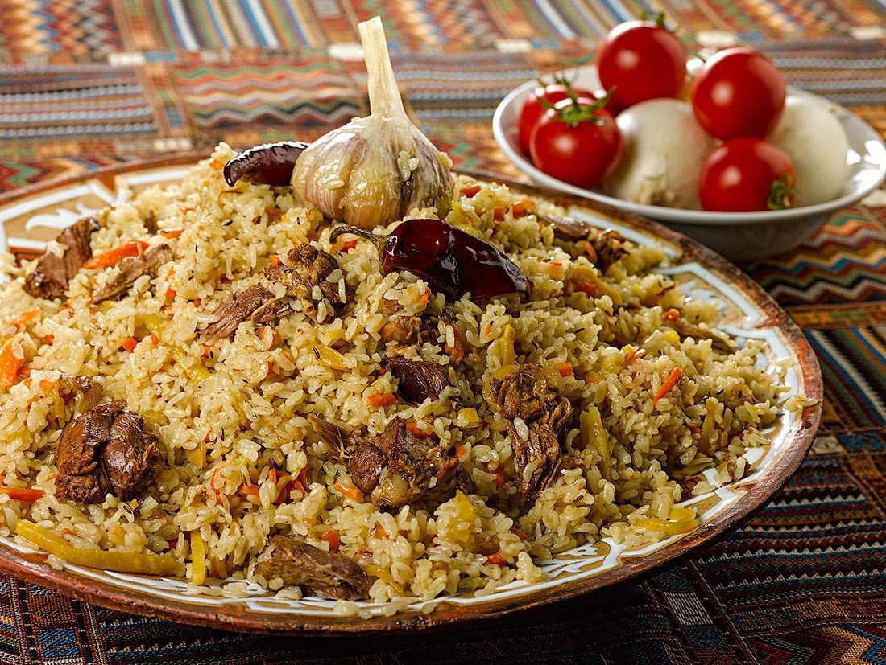

Pilaf Recipe

Description
Many are afraid to cook pilaf - it turns out to be porridge, then dry, then too watery. In addition, the gurus of Uzbek cuisine like to talk about it in a long, ornate way and with a lot of restrictions.
It seems that cooking pilaf is more difficult than controlling a spaceship. It's not like that at all! Pilaf is a simple meal. And pilaf is prepared easily and simply! Without any show-offs and problems!
Ingredients
- Meat (chicken, lamb, etc.) - 1 kg
- Rice (long-grain steamed or other rice) - 1 kg
- v
- Onion - 4 pcs
- Garlic - 2 heads
- Fresh hot pepper - 2 pods
- Cumin or other spices - to taste
- Salt - to taste
- Vegetable oil - 250-300 ml
Steps
- We prepare all the products for pilaf.
Cut the meat into pieces.
- Onions are cut into cubes, carrots - rather large cubes.
- In a heated cauldron, lightly fry the onion in vegetable oil.
- Add the meat, fry until almost ready.
- We put the carrots to sleep, fry them. Salt, add spices.
- We wash the rice well, put it in a cauldron, mix it and pour boiling water so that the water covers the rice by 2-2.5 cm.
It is better to keep the water short. If during the cooking process it turns out that there is not enough water, you can safely add it. But if there is a lot of water, the rice is guaranteed to be digested.
- Bring to a boil without covering with a lid. We try for salt and add salt if necessary.
- As soon as it boils, add whole garlic heads, peeled from the top husk, and hot pepper pods.
Reduce the heat to a minimum, cover with a lid and leave the pilaf for 20 minutes.
After 20 minutes, check: if the rice is still raw and there is no more water, add some hot water and cover again. The finished rice should not be too soft.
- Turn off the fire and let the pilaf stand for 15-20 minutes.
- Traditionally, Achuchuk salad (Achik-Chuchuk or, otherwise, Shakarob) is prepared for Uzbek pilaf. It is elementary to cook it: cut tomatoes and onions, add salt and black pepper. Oil is not added to this salad.
- The pilaf is ready! Enjoy your meal!